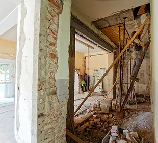
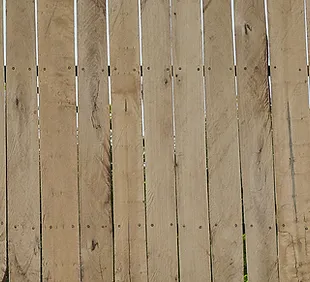
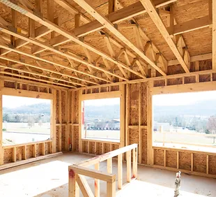
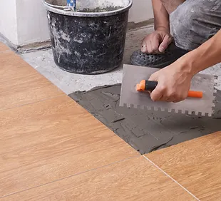

Demolition
From towering buildings to small structures, demolition professionals strategically deconstruct and remove edifices, clearing space for new developments or repurposing land.

They come in diverse styles, such as picket, chain-link, or privacy panels, offering functional and aesthetic benefits to residential, commercial, and agricultural spaces.

It provides a smooth, durable surface for walls and ceilings, offering ease of installation and versatility in interior construction projects.

Finish Carpenter
Specialize in the intricate details of construction, such as installing trim, molding,door and Windows to add the final touches that enhance the aesthetics and functionality of a space.

Framing
Assemble wooden or metal frames, laying the foundation for walls, floors, and roofs according to architectural plans and engineering specifications.
Painting
Whether for walls, furniture, or artwork, painting enhances aesthetics, protects against wear, and allows for personal expression through color and texture.

Tile
Often ceramic or porcelain, square or rectangular pieces used to cover surfaces such as floors, walls, or countertops.